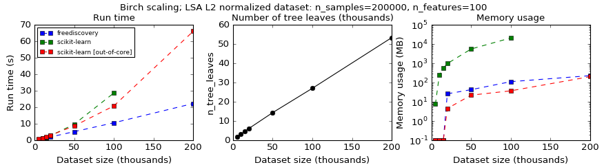
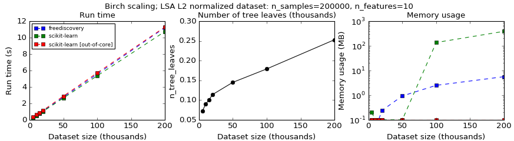

Clustering¶
For a general introduction to clustering please refer to the scikit-learn documentation.
In this section, we only consider algorithms that are suitable for clustering of textual data and that
have a good scalabilty.
In particular, we consider the sklearn.cluster.MiniBatchKMeans for non hierarchical clustering and
sklearn.cluster.Birch for hierarchical clustering.
Birch¶
Scikit-learn implements an online version of the BIRCH algorithm where the cluster hierarchy can be iteratively constructed by processing the dataset in batches (cf scikit-learn’s User Guide). This is advantageous with respect to the memory usage, however it makes more difficult to analyse the computed hierarchical tree.
FreeDiscovery includes a slightly modified version of sklearn.cluster.Birch
that allows to store the indices of samples belonging to each subcluster
in the hierarchy, as proposed in scikit-learn/scikit-learn#8808.
As a result, freediscovery.cluster.Birch does not allow online learning, however it,
allows to more easily explore the hierarchy of clusters, as illustrated in the following section.
since we know which document belong to which subcluster, we no longer need to compute the leaf labels with nearest neighbours (
O(N_samples*N_tree_leaves)complexity) as in the original implementation. For datasets that produce very deep cluster hierarchy (for instance in the case of high dimensional data), this results in significanly faster computations at the cost of some memory overhead.Example
Figure 1. Time and memory compexity of Birch algorithm for a 100 dimensional LSA dataset.
In Fig. 1, running BIRCH with default parameters on a dataset obtained with a 100 dimensional LSA decomposition of a text collection, results in a cluster hierarchy containing 10-50k leaf subclusters. In this case the proposed modification outperforms the online version of BIRCH.
However, if one considers the same benchmark with a dataset having 10 dimensions (Fig. 2 below), which produces only 100-300 leaf subclusters, this modification results solely in a memory overhead.
Figure 2. Time and memory compexity of Birch algorithm for a 10 dimensional LSA dataset.
The setup for this example is available here.
Another side effect of the previous point is that for some unknown datasets and clustering parameters this implementation will return a result with a more predictable compute time (since it’s less dependent on the cluser hierarchy depth).
{kind=link}
{kind=link}
Exploring BIRCH cluster hierarchy¶
Overview¶
After computing the BIRCH clustering,
from freediscovery.cluster import Birch
cluster_model = Birch(compute_sample_indices=True)
cluster_model.fit(X)
we can explore the hierarchical tree via the cl.root_ attribute. However,
this is not very practical since following the original BIRCH paper, each subcluster
is a combination of CFNode and CFSubcluster that are designed for efficiently
clustering the dataset, but not so much for subsequent exploration of the resulting
hierarchical tree.
In FreeDiscovery, we thus wrap each subcluster with
a BirchSubcluster class designed to simplify the
exploration of the BIRCH hierarchical tree. This can be acchieved with,
from freediscovery.cluster import birch_hierarchy_wrapper
htree_new, _ = birch_hierarchy_wrapper(cluster_model)
See the Exploring BIRCH cluster hierarchy example for a more detailed illustration.